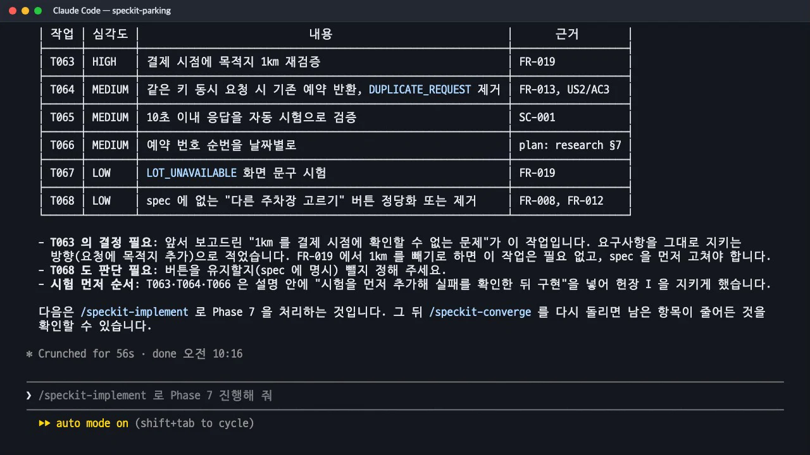
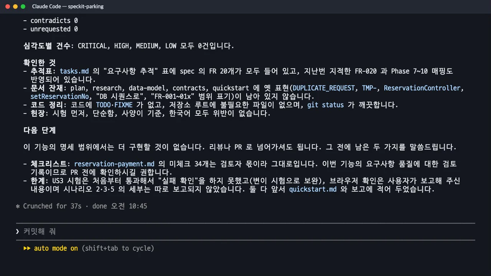
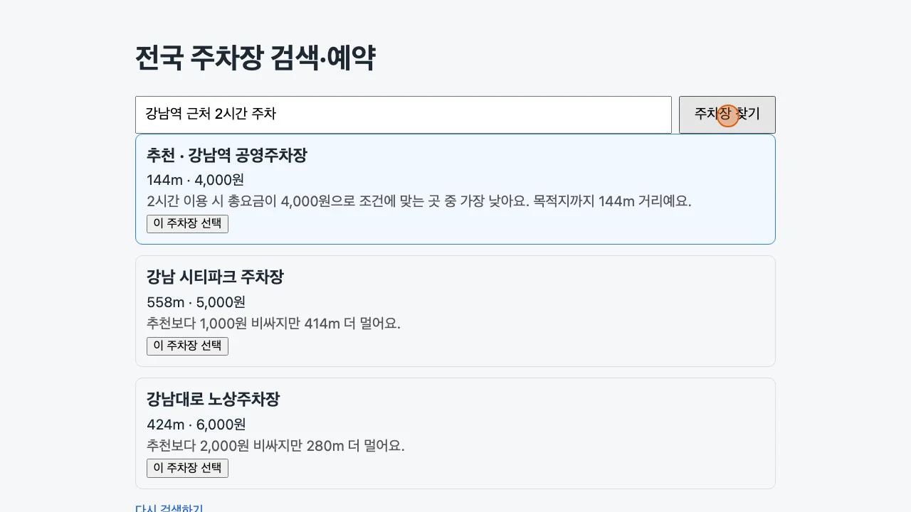
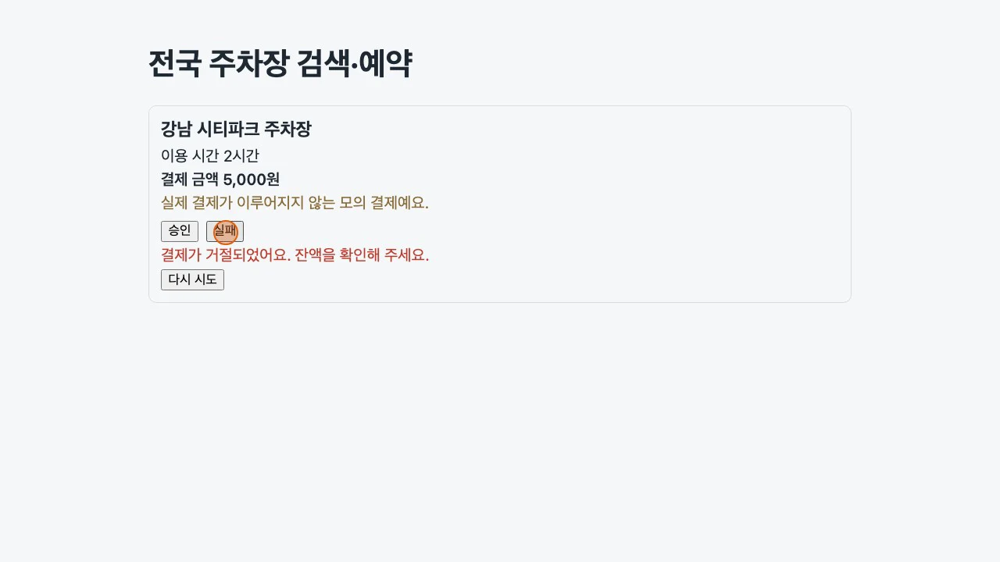

구현이 끝났다고 해서 사양을 모두 충족한 것은 아닙니다.
/speckit-converge는 사양·계획·작업을 유일한 기준으로 현재 코드를 대조해 남은 일을tasks.md끝에 작업으로 덧붙입니다. 이 실습에서는 6번 만에 「✅ Converged」가 나왔고, 그사이 사람이 브라우저로 직접 확인해야 하는 일도 한 번 있었습니다.
이 장의 산출물 · GitHub
이 장이 끝났을 때의 파일이 공개 저장소 uengine-oss/tutorial-speckit-handson의 태그 step-10-converge에 있습니다. 본문의 파일 이름을 눌러도 해당 파일이 열립니다.
무엇을 · 왜#
수렴(converge)은 구현 뒤에 실행하는 점검입니다. 규칙이 엄격합니다.
| 규칙 | 뜻 |
|---|---|
| 기준은 문서뿐 | spec.md·plan.md·tasks.md와 헌법만 기준으로 삼습니다. git 기록이나 diff를 보지 않고 현재 코드를 봅니다 |
| 완료 표시는 증거가 아니다 | [X]가 붙은 작업도 다시 확인합니다 |
| 덧붙이기만 한다 | 쓰는 것은 tasks.md 끝의 ## Phase N: Convergence 한 절뿐. 사양·계획·코드는 고치지 않고, 기존 작업의 번호도 바꾸지 않습니다 |
| 다 됐으면 손대지 않는다 | 남은 일이 없으면 tasks.md를 한 글자도 바꾸지 않고 「✅ Converged」를 보고합니다 |
찾은 차이는 네 가지로 나눕니다.
| 종류 | 뜻 |
|---|---|
missing |
요구한 일이 코드에 전혀 없습니다 |
partial |
있지만 요구를 모두 충족하지 못했습니다 |
contradicts |
요구나 헌법 MUST와 반대로 동작합니다 |
unrequested |
사양·계획·작업 어디에도 없는 일을 했습니다(지우지 않고, 정당화하거나 지우라는 작업만 덧붙입니다) |
심각도는 헌법 MUST 위반과 P1 이야기의 기본 기능을 막는 차이가 CRITICAL, 핵심 요구의 누락·부분 구현이 HIGH입니다. 수렴이 덧붙인 작업은 다시 /speckit-implement가 처리합니다. 그래서 흐름은 수렴 → 구현 → 수렴의 반복이 됩니다.
따라 하기#
- 첫 수렴.
/speckit-converge를 실행합니다. 56초 뒤## Phase 7: Convergence에 작업 6개(T063~T068)가 붙었습니다. 사양·계획·코드는 건드리지 않았다고 따로 밝혔습니다. | 작업 | 심각도 | 내용 | 근거 | |---|---|---|---| | T063 | HIGH | 결제 시점에 목적지 1km 재확인 | FR-019 | | T064 | MEDIUM | 같은 키 동시 요청 시 기존 예약 반환, 사양에 없는 오류 코드 제거 | FR-013, US2/AC3 | | T065 | MEDIUM | 10초 이내 응답을 자동 시험으로 | SC-001 | | T066 | MEDIUM | 예약 번호 순번을 날짜별로 | plan: research §7 | | T067 | LOW | 「이용할 수 없는 주차장」 화면 문구 시험 | FR-019 | | T068 | LOW | 사양에 없는 「다른 주차장 고르기」 버튼을 정당화하거나 제거 | FR-008, FR-012 |
첫 수렴 결과: Phase 7 에 덧붙인 작업 6개 - 결정이 필요한 두 작업을 정하고 구현합니다. T063은 사양을 지키는 쪽(결제 요청에 목적지를 더함), T068은 사양에 없으니 빼는 쪽으로 정했습니다.
구현 전에 시험 91개 중 새로 쓴 6개가 실패하는 것을 확인했고, 구현 뒤 모두 통과했습니다.
/speckit-implement Phase 7 을 진행해 줘. T063 은 결제 요청에 목적지를 더해 사양대로 1km 를 확인하고, T068 의 버튼은 사양에 없으니 빼 줘. - 두 번째 수렴: 「완료」였던 작업이 다시 걸립니다. 6개는 모두 해결됐지만 새로 두 개가 붙었습니다. 그중 T069는 이런 지적이었습니다. "T061은 「브라우저에서 실행」이라고 적혀 있고 완료로 표시됐지만, 실제로는 서버를 띄워 API만 확인했다." 그리고 "에이전트 대신 직접 보시면서 하는 편이 더 정확할 수 있다"고 권했습니다.
- 사람이 브라우저로 확인합니다. Claude에게 서버만 띄워 달라고 하고,
quickstart.md의 수동 시나리오 1~6을 브라우저에서 직접 해 봤습니다. 녹화 스크립트로 재 보니 검색 버튼을 누르고 0.7초 안에 추천 3곳이 보였고, 승인하면 예약 번호PK-20261113-0001이, 다른 곳을 골라 실패한 뒤 다시 시도해 승인하면PK-20261113-0002가 나왔습니다. 이 결과를 알려 주자 Claude가quickstart.md에 기록하고 T069를 완료로 표시했습니다. - 문서가 맞을 때까지 반복합니다. 이후 수렴은 코드가 아니라 문서의 사소한 불일치만 찾았습니다. 연구 문서의 문구, 사양에 없는 「새로 검색하기」 버튼(사양에 한 줄 명시해 유지), 계획의 오래된 숫자, 추적표의 빠진 행. 여섯 번째 수렴에서 「✅ Converged — the implementation satisfies the spec, plan, and tasks.」가 나왔습니다.

여섯 번째 수렴: Converged
수렴이 걸어온 길#
| 회차 | 덧붙은 작업 | 성격 |
|---|---|---|
| 1 | 6개 (T063~T068) | 기능 누락·부분 구현, 사양에 없는 버튼 |
| 2 | 2개 (T069·T070) | 「완료」 표시만 있던 브라우저 확인, 남은 코드 |
| 3 | 2개 (T071·T072) | 연구 문서 문구, 사양에 없는 버튼 |
| 4 | 1개 (T073) | 계획 문서의 오래된 숫자·이름 |
| 5 | 1개 (T074) | 추적표의 빠진 행 |
| 6 | 0개 | ✅ Converged |
마지막 결과는 작업 75개([X]), 백엔드 시험 91개와 화면 시험 28개 통과, 빌드 성공이었습니다. tasks.md에는 Phase 7부터 Phase 11까지 수렴 절이 다섯 개 쌓였고, 앞의 작업 번호는 하나도 바뀌지 않았습니다.
언제 멈출지는 사람이 정한다
3회차부터는 동작에 영향이 없는 문서 정리만 나왔고, Claude도 "건너뛰고 지금 상태로 리뷰하셔도 됩니다"라고 했습니다. 이 실습은 끝까지 가 보려고 Converged까지 실행했지만, 실제로는 기능 차이가 사라진 시점에 리뷰로 넘어가도 됩니다. 반대로 마지막 보고에 남은 두 가지(검토자 몫인 체크리스트 34개, 처음부터 통과해 「실패 확인」을 못 한 US3 시험)는 수렴이 고쳐 주지 않는, 사람이 판단할 일입니다.
실제 앱#
수렴을 마친 앱의 화면입니다. "강남역 근처 2시간 주차"를 넣으면 추천 1곳과 후보 2곳이 거리·총요금·이유와 함께 나오고, 한 곳을 고르면 모의 결제 화면에서 「승인」·「실패」를 고릅니다. 실패하면 「결제가 거절되었어요. 잔액을 확인해 주세요.」와 「다시 시도」가 보입니다.


cd backend && ./mvnw spring-boot:run # 8080
cd frontend && npm install && npm run dev # 5173, /api 는 8080 으로
확인 문제#
[`tasks.md`](https://github.com/uengine-oss/tutorial-speckit-handson/blob/step-10-converge/specs/001-parking-search-reserve/tasks.md)에서 이미 `[X]`인 작업을 수렴이 다시 걸 수 있나요?
네. 수렴 규칙에 "완료 표시는 증거가 아니다"가 있습니다. 이 실습의 T061(브라우저 수동 확인)은 [X]였지만, 실제로는 API만 확인했다는 이유로 두 번째 수렴에서 T069로 다시 지적됐습니다. 다만 기존 작업의 체크를 지우지는 않고, 새 작업을 덧붙입니다.
수렴은 사양에 없는 코드를 찾으면 지우나요?
지우지 않습니다. unrequested로 분류하고 "정당화하거나 제거하라"는 작업만 덧붙입니다. 이 실습에서는 「다른 주차장 고르기」 버튼은 빼고, 「새로 검색하기」 버튼은 사양에 한 줄 명시해 남겼습니다. 어느 쪽이든 사람이 정하고 구현이 처리합니다.
남은 일이 없을 때 수렴은 무엇을 남기나요?
아무것도 남기지 않습니다. 빈 Convergence 절도 만들지 않고 tasks.md를 한 글자도 바꾸지 않은 채 「✅ Converged」와 확인한 항목 수만 보고합니다.